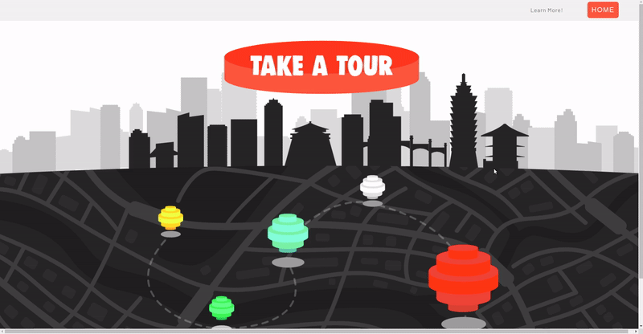
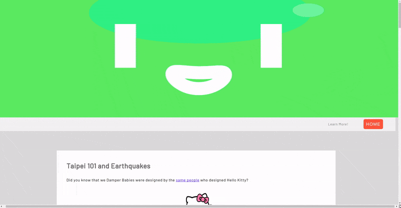
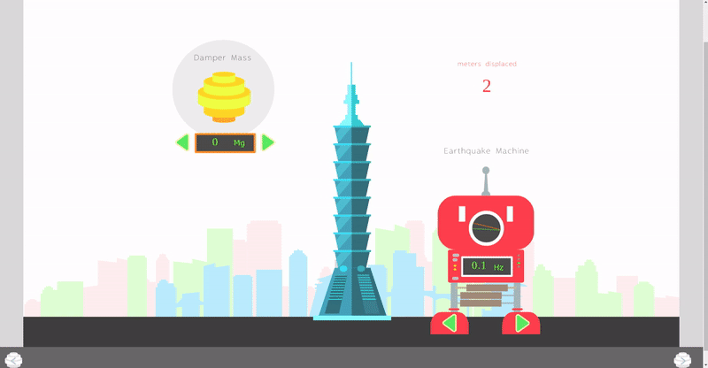

Taipei Earthquake Simulator Website

Short Version:
I created a website, with a partner, to teach differential equations and spring mass physics in a colorful and interactive way.
Technologies Involved: HTML, Javascript, CSS, Adobe Illustrator, Adobe Animate, CreateJS, HTML5 Canvas, Mathematica
Long Version:
We created an interactive web app that simulates the effects of earthquakes on the skyscraper, Taipei 101, aimed to provide our peers with an educational and informative journey through topics such as coupled second order ODEs, damping, and eigenfrequencies.
Our goal was to contextualize these concepts through the use of an iconic real-world example. In addition to its international status (it was the tallest building in the world until 2010), Taipei 101 is also the only skyscraper in the world with a damping system open to public exhibition. In fact, the 660-ton tuned mass damper is so important to the building’s brand that officials even designed a cast of animated characters, the Damper Babies, to educate tourists on how it works to keep Taipei safe.
Click here to see our cute, interactive, Damper-Baby themed website for yourself!
The interactive components were designed in Adobe Illustrator and animated in Adobe Animate with CreateJS.
The cutesy appearance of each page was formatted with CSS that was coded from scratch. That said, god forbid you run this website on mobile!
We use time-discrete math and physics to create the back-end physics for our simulators in Javascript.
We conclude your journey through our website with an easter egg that appears if you find Taipei 101's resonance frequency with the skills you learned on the way!